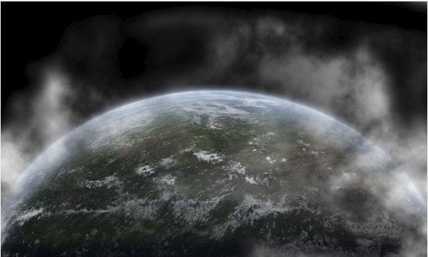

Создание падающего метеорита в Photo-Paint
Наконец, по прошествии довольно большого количества времени, у меня появилась возможность, чтобы написать хоть какой-то урок. Я его писал частями, т. е. с большими перерывами, из-за чего долго вообще ничего не выкладывал. Поэтому в этом уроке скорее всего будет полезным «направление основного удара», а каждый может что-то сделать по-своему и гораздо лучше.
В этом уроке попробуем создать картину столкновения метеорита с планетой. Заготовка планеты уже создана, поэтому останется ее просто скачать (файл Lesson 62-2.rar разбит на 4 части из-за большого размера). Можно конечно использовать другое изображение с планетой или самому создать на свой вкус.
1. На рис. 1 показано исходное изображение и соответствующая ему картина в докере Object Manager (Диспетчер объектов). Сразу оговорюсь, действие происходит в Photo-Paint X7.
Разворачиваем группу «Облака», переходим к объекту «тень облака» и уменьшаем его непрозрачность примерно до 30% (рис. 2):
Размоем немного нашу планету, для более мягкого перехода в фон. Для этого выполните команду Object > Feather (Объект > Размыть края). Введите в счетчике Width (Ширина) значение 65. В раскрывающемся списке Edges (Края) выберите тип края Curved (Скругленные).
Чтобы добавить немного эффекта облаков по краям планеты, создайте новый объект поверх всех объектов. Для этого нажмите кнопку New Object (Новый объект) в докере Object Manager (Диспетчер объектов). Теперь зальем созданный объект текстурой. Нажмите клавишу F, чтобы активизировать инструмент Fill (Заливка), а на Панели свойств выберите тип Texture fill (Текстура), а в списке Fill picker (Указатель заливки), выберите заливку, как на рис. 3.
Т. к. заливка «цветная», то нам нужно ее обесцветить. Для этого выполните команду Adjust > Grayscale (Настройка > Оттенки серого). В диалоговом окне Grayscale (Оттенки серого), оставив все настройки по умолчанию, просто щелкните ОК.
Нажмите клавишу 1 (цифра 1), чтобы выбрать инструмент Object Transparency (Прозрачность объекта). На Панели свойств выберите тип Fountain transparency (Градиентная прозрачность) (рис. 4).
Создайте прозрачность, как на рис. 5.
На Панели свойств щелкните кнопку Apply (Применить). Теперь необходимо наши облака сделать поменьше. Сотрем их Ластиком, для чего нажмите клавишу Х, а на Панели свойств выберите мягкую кисть (рис. 6).
Я увеличил размер кисти до 130 px, но вы можете подобрать размер по своему вкусу. Аккуратно сотрите облака, чтобы получилось примерно, как на рис. 7.

Можно конечно облака сделать по своему усмотрению, оставить их больше или меньше, или сделать более прозрачными.
2. В докере Object Manager (Диспетчер объектов) выделите группу «пре-рендеринг планеты) и в нижней части докера нажмите кнопку New Lens (Создание линзы). В окне New Lens (Создание линзы) выберите линзу Grayscale (Оттенки серого) и щелкните ОК. В открывшемся окне Grayscale (Оттенки серого) сделайте настройки, как на рис. 8.
Отредактируем маску в линзе Grayscale (Оттенки серого), для чего щелкните в докере Object Manager (Диспетчер объектов) на плюсике между объектом и маской (рис. 9).
Теперь закрасьте мягкой черной кистью часть маски, как на рис. 10.
А затем сделайте размывку По Гауссу. Я размывал при значении Радиуса – 48 px. Выше, на рис. 9, на пиктограмме линзы видна область закрашенная кистью. Это соответствует правой части планеты.
Поверх линзы Grayscale (Оттенки серого) создайте линзу Color Balance (Баланс цветов) и сделайте настройки, как на рис. 11.
Выше группы «атмосфера» добавим линзу Contrast Enhancement (Увеличение контрастности) и сделаем настройки, как на рис. 12.
Отредактируем линзу Contrast Enhancement (Увеличение контрастности) аналогично линзе Grayscale (Оттенки серого), но выберем жесткую черную кисть размером 600 px. Вы можете подобрать размер отличный от моего. Достаточно раз щелкнуть кистью в верхнем правом углу, а затем применить размывку По Гауссу, как в предыдущем случае.
Поверх всех объектов добавим линзу Tone curve (Цветовая кривая) и сделаем настройки, как на рис. 13.
В докере Object Manager (Диспетчер объектов) должна быть «картина», как на рис. 14.
И получаем вот такой эффект (рис. 15):

3. Теперь давайте попробуем создать эффект падающего метеорита. В прикрепленных файлах имеется файл SS-space_27.png, из которого мы создадим необходимую нам кисть. Откройте этот файл (рис. 16).
Если мы создадим кисть непосредственно из данного изображения, она будет слишком большой и будет содержать некоторые мелкие детали, нам абсолютно не нужные. Поэтому, нажмите W, чтобы выбрать инструмент Magic Wand Mask (Маска волшебной палочкой), а на Панели свойств установите значение Tolerance (Допуска) равным 2. Щелкните на пустом месте изображения. Тут надо оговориться, потому что данное изображение имеет практически невидимые участки. Поэтому лучше щелкнуть в области верхнего левого угла. Как это часто бывает, значения различных параметров вы можете выбирать отличные от моих, исходя из того, что получается у вас в ходе выполнения работы. Значение Допуска у вас может отличаться от моего примерно в пределах от 1 до 4. Таким образом, мы выделили «пустую» часть изображения. Теперь инвертируем маску, например, нажав Ctrl + Shift + I.
Выберите инструмент Кисть, нажав клавишу Р, а в докере Brush Settings (Настройки кисти) (Ctrl + F8), в области Nib Properties (Свойства кончика), раскройте меню кнопки Nib Options (Параметры кончика). Выберите пункт Create from contents of Mask (Создать из содержимого маски). Таким образом мы создадим кисть, с помощью которой будем создавать наш метеорит. В открывшемся окне Create a Custom Brush (Создание специальной кисти), оставьте все без изменения и щелкните ОК. У меня получилась кисть размером 595 px.
Создаем новый объект и берем вновь созданную кисть метеорита. Направление кисти совершенно не то, которое нужно нам, поэтому повернем кисть, установив в докере Brush Settings (Настройки кисти) значение Rotate (Повернуть) = 255. Зададим теперь цвет нашего метеорита: R = 255; G = 102; B = 68. Можно было выбрать просто оранжевый цвет, но мне больше по вкусу этот. Щелкните кистью примерно в центре изображения. Это сделано для того, чтобы вся кисть уместилась в пределах изображения. Потом мы переместим наш метеорит в нужное место, сейчас пусть вас не беспокоит, что рисунок выглядит несколько неестественно (рис. 17).
Сейчас более или менее отчетливо видно ядро, а «хвост» практически невидим, это мы сейчас «подправим».
Продублируйте созданный объект, нажав Ctrl + D. Применим к новому объекту фильтр Hue/Saturation/Lightness (Оттенок/Насыщенность/Яркость). В окне фильтра установите значение Hue (Оттенок) = 14. Переключитесь на инструмент Object Pick (Выбор объекта) и уменьшите размер (рис. 18). По мере уменьшения объекта-дубликата, он будет смещаться, поэтому перетащите его, чтобы «центры ядер» полученных «метеоритов» почти совпадали (рис. 18).
Теперь дублируем объект («новый метеорит»), Ctrl + D. Применяем к новому объекту фильтр Hue/Saturation/Lightness (Оттенок/Насыщенность/Яркость). В окне фильтра установите значение Lightness (Яркость) = 100. Уменьшаем этот объект и совмещаем, также, как в предыдущем случае (рис. 19).
Здесь есть небольшой нюанс. От взаимного расположения этих трех объектов зависит конечный результат, точнее окончательный вид метеорита. Поэтому в этом месте можно создать контрольную точку, чтобы при необходимости вернуться именно к этому моменту и подправить взаимное расположение объектов. Имеется ввиду, что может потребоваться сдвинуть один или оба дубликата ближе к началу метеорита или немного изменить их размер.
Итак, мы имеем 3 объекта. Теперь их нужно объединить в один. Для этого в докере Object Manager (Диспетчер объектов) выделите все три объекта и нажмите внизу докера кнопку Combine Selected Objects (Объединить выделенные объекты). Переименуйте полученный объект в «Метеорит».
Продублируйте «Метеорит» несколько раз. Здесь можете положиться на свой вкус и сделать количество копий и режим наложения по своему усмотрению. Я продублировал 4 раза. К первым двум дубликатам применил режим наложения Color Dodge, а к двум последующим – Screen. Затем объединил все дубликаты и объект-Метеорит. Получилось, как на рис. 20.
В заключение этого шага разместим наш метеорит в более подходящем месте. Также можно дополнительно немного применить сначала размывку фильтром Motion Blur, установив значение угла наклона 55 градусов. Здесь я размывку не применял.
Т. к. на мой взгляд метеорит маленько великоват, я его уменьшил и немного повернул. Итак, после размещения метеорита, получится такое изображение (рис. 21) (масштаб на скриншоте увеличен).
4. Теперь сосредоточимся на добавлении последних штрихов к нашему изображению. Добавим сначала эффект вспышки от падения метеорита. Для этот выберите мягкую круглую кисть и нарисуйте «свет» от метеорита (рис. 22). Здесь можно экспериментировать с формой вспышки на свой вкус. Здесь же я долго не мудрствовал и сделал попроще.

Затем сделал размывку По Гауссу, с значение Радиуса 21px. Т. к. вспышка – это объект, то его можно дополнительно трансформировать, чтобы придать желаемую форму (рис. 23). Измените режим наложения на Hard Light.
Теперь добавим в наше изображение «огоньку». Для этого я использовал имевшийся в моем распоряжении Image list (Список изображений). Надо отметить, что по умолчанию в Photo-Paint X7 не слишком изобилует заготовками. У меня остался Image list (Список изображений) еще от Photo-Paint 12, коим я и воспользовался. Используем Image list (Список изображений) находится в прикрепленных файлах – Fire.cpt. Перед использованием инструмента Image Sprayer (Распылитель), создайте еще один объект. Теперь нажмите горячую клавишу I, чтобы выбрать инструмент Image Sprayer (Распылитель). На Панели свойств щелкните кнопку Browse (Обзор) и выберите файл Fire.cpt. Я ничего не менял в настройках этого инструмента и просто щелкнул в произвольном месте. Возможно вам придется несколько раз заново щелкать этим инструментом и потом отменять действие, пока не подберете желаемый вид огня. А можете сначала подкорректировать сам Список, чтобы не возиться потом с подбором. Можно найти какое-либо изображение с огнем и взять оттуда фрагмент.
Вариантов множество и это зависит от вас, на каком варианте вы остановитесь. У меня получилось, как на рис. 24. Это так сказать, «предварительный вид» огня. Я дополнительно трансформировал немного этот объект, чтобы придать ему более или менее правильную перспективу. И не забывайте, что любые манипуляции с объектом при необходимости можно сделать позже, чтобы скорректировать окончательный вид изображения.
В докере Object Manager (Диспетчер объектов), объект-огонь расположите под объектом-метеоритом и измените режим наложения на Hard Light, а затем продублируйте. Объедините эти два объекта, а затем размойте края с значением Width (Ширина) = 15. Дополнительно я увеличил размер объекта и получился такой результат (рис. 25).
В конечном итоге, докер Object Manager (Диспетчер объектов) должен выглядеть, как на рис. 26.
Я навскидку добавил еще пару метеоритов (в докере, на рис. 26 их нет), продублировав имеющийся метеорит, уменьшив их и размыв По Гауссу, с малым значением Радиуса.
Окончательный вариант на рис. 27.
Ну, и в заключение скажу, что по ходу можете поэкспериментировать с режимами наложения при создании вспышки и метеорита. Можно получить довольно интересные результаты. Также можно, ради интереса добавить линзу Selective Color поверх всех объектов поэкспериментировать с ней.

Невероятный урок!